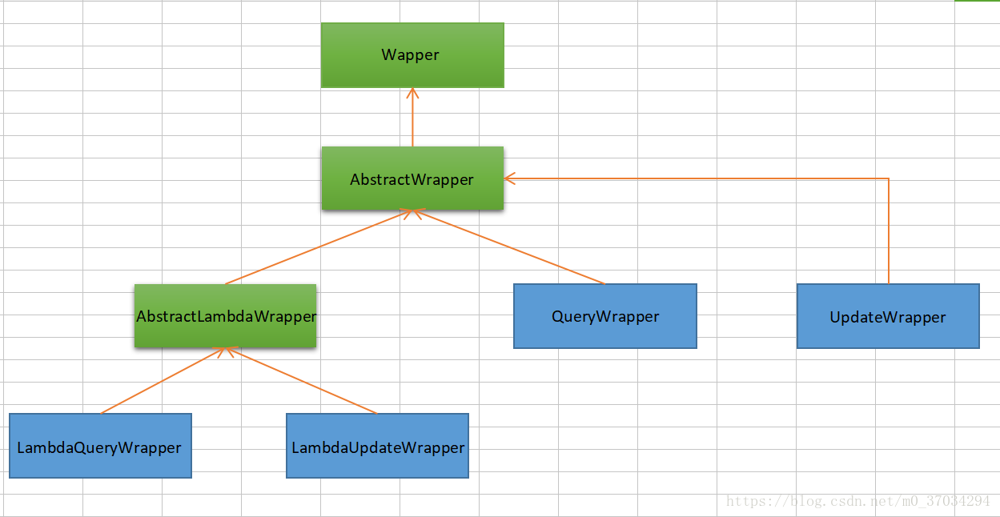

[TOC]
MybatisPlus
全新的
MyBatis-Plus3.0 版本基于 JDK8，提供了lambda形式的调用，所以安装集成 MP3.0 要求如下：
基本配置
1、添加依赖
Spring Boot
<dependency> <groupId>com.baomidou</groupId> <artifactId>mybatis-plus-boot-starter</artifactId> <version>3.1.2</version> </dependency>Spring MVC
<dependency> <groupId>com.baomidou</groupId> <artifactId>mybatis-plus</artifactId> <version>3.1.2</version> </dependency>
2、配置MapperScan
Spring Boot
@SpringBootApplication @MapperScan("cn.wsyjjly.mapper") public class Application { public static void main(String[] args) { SpringApplication.run(Application.class, args); } }Spring MVC
配置 MapperScan
<bean class="org.mybatis.spring.mapper.MapperScannerConfigurer"> <property name="basePackage" value="com.baomidou.mybatisplus.samples.quickstart.mapper"/> </bean>调整 SqlSessionFactory 为 MyBatis-Plus 的 SqlSessionFactory
<bean id="sqlSessionFactory" class="com.baomidou.mybatisplus.extension.spring.MybatisSqlSessionFactoryBean"> <property name="dataSource" ref="dataSource"/> </bean>
3、注解
@TableName
描述：表名注解
属性 类型 必须指定 默认值 描述 value String 否 "" 表名 resultMap String 否 "" xml 中 resultMap 的 id schema String 否 "" schema(@since 3.1.1) keepGlobalPrefix boolean 否 false 是否保持使用全局的 tablePrefix 的值(如果设置了全局 tablePrefix 且自行设置了 value 的值)(@since 3.1.1) @TableId
描述：主键注解
属性 类型 必须指定 默认值 描述 value String 否 "" 主键字段名 type Enum 否 IdType.NONE 主键类型 idType
值 描述 AUTO 数据库自增 INPUT 自行输入 ID_WORKER 分布式全局唯一ID 长整型类型 UUID 32位UUID字符串 NONE 无状态 ID_WORKER_STR 分布式全局唯一ID 字符串类型 @TableField
描述：字段注解(非主键)
属性 类型 必须指定 默认值 描述 value String 否 "" 字段名 el String 否 "" 映射为原生 #{ ... }逻辑,相当于写在 xml 里的#{ ... }部分exist boolean 否 true 是否为数据库表字段 condition String 否 "" 字段 where实体查询比较条件,有值设置则按设置的值为准,没有则为默认全局的%s=#{%s}update String 否 "" 字段 update set部分注入, 例如：update="%s+1"：表示更新时会set version=version+1(该属性优先级高于el属性)strategy Enum 否 FieldStrategy.DEFAULT 字段验证策略 3.1.2+使用下面3个替代 insertStrategy Enum N DEFAULT 举例：NOT_NULL: insert into table_a(<if test="columnProperty != null">column</if>) values (<if test="columnProperty != null">#{columnProperty}</if>)(since v_3.1.2)updateStrategy Enum N DEFAULT 举例：IGNORED: update table_a set column=#{columnProperty}(since v_3.1.2)whereStrategy Enum N DEFAULT 举例：NOT_EMPTY: where <if test="columnProperty != null and columnProperty!=''">column=#{columnProperty}</if>(since v_3.1.2)fill Enum 否 FieldFill.DEFAULT 字段自动填充策略 select boolean 否 true 是否进行 select 查询 keepGlobalFormat boolean 否 false 是否保持使用全局的 format 进行处理(@since 3.1.1) FieldStrategy
值 描述 IGNORED 忽略判断 NOT_NULL 非NULL判断 NOT_EMPTY 非空判断(只对字符串类型字段,其他类型字段依然为非NULL判断) DEFAULT 追随全局配置 FieldFill
值 描述 DEFAULT 默认不处理 INSERT 插入时填充字段 UPDATE 更新时填充字段 INSERT_UPDATE 插入和更新时填充字段 @Version
描述：乐观锁注解、标记
@Verison在字段上@EnumValue
描述：通枚举类注解(注解在枚举字段上)
@TableLogic
描述：表字段逻辑处理注解（逻辑删除）
属性 类型 必须指定 默认值 描述 value String 否 "" 逻辑未删除值 delval String 否 "" 逻辑删除值 @SqlParser
描述：租户注解 目前只支持注解在 mapper 的方法上(3.1.1开始支持注解在mapper上)
属性 类型 必须指定 默认值 描述 filter boolean 否 false true: 表示过滤SQL解析，即不会进入ISqlParser解析链，否则会进解析链并追加例如tenant_id等条件 @KeySequence
描述：序列主键策略
oracle属性：value、resultMap
属性 类型 必须指定 默认值 描述 value String 否 "" 序列名 clazz Class 否 Long.class id的类型, 可以指定String.class，这样返回的Sequence值是字符串"1"
Mapper CRUD接口
增加（1）
insert
/**
* <p>
* 插入一条记录
* </p>
*
* @param entity 实体对象
* @return 插入成功记录数
*/
int insert(T entity);
删除（4）
deleteById
/**
* <p>
* 根据 ID 删除
* </p>
*
* @param id 主键ID
* @return 删除成功记录数
*/
int deleteById(Serializable id);
deleteByMap
/**
* <p>
* 根据 columnMap 条件，删除记录
* </p>
*
* @param columnMap 表字段 map 对象
* @return 删除成功记录数
*/
int deleteByMap(@Param(Constants.COLUMN_MAP) Map<String, Object> columnMap);
delete
/**
* <p>
* 根据 entity 条件，删除记录
* </p>
*
* @param wrapper 实体对象封装操作类（可以为 null）
* @return 删除成功记录数
*/
int delete(@Param(Constants.WRAPPER) Wrapper<T> wrapper);
deleteBatchIds
/**
* <p>
* 删除（根据ID 批量删除）
* </p>
*
* @param idList 主键ID列表(不能为 null 以及 empty)
* @return 删除成功记录数
*/
int deleteBatchIds(@Param(Constants.COLLECTION) Collection<? extends Serializable> idList);
更新（2）
updateById
/**
* <p>
* 根据 ID 修改
* </p>
*
* @param entity 实体对象
* @return 修改成功记录数
*/
int updateById(@Param(Constants.ENTITY) T entity);
update
/**
* <p>
* 根据 whereEntity 条件，更新记录
* </p>
*
* @param entity 实体对象 (set 条件值,可为 null)
* @param updateWrapper 实体对象封装操作类（可以为 null,里面的 entity 用于生成 where 语句）
* @return 修改成功记录数
*/
int update(@Param(Constants.ENTITY) T entity, @Param(Constants.WRAPPER) Wrapper<T> updateWrapper);
查询（10）
selectById
/**
* <p>
* 根据 ID 查询
* </p>
*
* @param id 主键ID
* @return 实体
*/
T selectById(Serializable id);
selectBatchIds
/**
* <p>
* 查询（根据ID 批量查询）
* </p>
*
* @param idList 主键ID列表(不能为 null 以及 empty)
* @return 实体集合
*/
List<T> selectBatchIds(@Param(Constants.COLLECTION) Collection<? extends Serializable> idList);
selectByMap
/**
* <p>
* 查询（根据 columnMap 条件）
* </p>
*
* @param columnMap 表字段 map 对象
* @return 实体集合
*/
List<T> selectByMap(@Param(Constants.COLUMN_MAP) Map<String, Object> columnMap);
selectOne
/**
* <p>
* 根据 entity 条件，查询一条记录
* </p>
*
* @param queryWrapper 实体对象
* @return 实体
*/
T selectOne(@Param(Constants.WRAPPER) Wrapper<T> queryWrapper);
selectCount
/**
* <p>
* 根据 Wrapper 条件，查询总记录数
* </p>
*
* @param queryWrapper 实体对象
* @return 满足条件记录数
*/
Integer selectCount(@Param(Constants.WRAPPER) Wrapper<T> queryWrapper);
selectList
/**
* <p>
* 根据 entity 条件，查询全部记录
* </p>
*
* @param queryWrapper 实体对象封装操作类（可以为 null）
* @return 实体集合
*/
List<T> selectList(@Param(Constants.WRAPPER) Wrapper<T> queryWrapper);
selectMaps
/**
* <p>
* 根据 Wrapper 条件，查询全部记录
* </p>
*
* @param queryWrapper 实体对象封装操作类（可以为 null）
* @return 字段映射对象 Map 集合
*/
List<Map<String, Object>> selectMaps(@Param(Constants.WRAPPER) Wrapper<T> queryWrapper);
selectObjs
/**
* <p>
* 根据 Wrapper 条件，查询全部记录
* 注意： 只返回第一个字段的值
* </p>
*
* @param queryWrapper 实体对象封装操作类（可以为 null）
* @return 字段映射对象集合
*/
List<Object> selectObjs(@Param(Constants.WRAPPER) Wrapper<T> queryWrapper);
selectPage
/**
* <p>
* 根据 entity 条件，查询全部记录（并翻页）
* </p>
*
* @param page 分页查询条件（可以为 RowBounds.DEFAULT）
* @param queryWrapper 实体对象封装操作类（可以为 null）
* @return 实体分页对象
*/
IPage<T> selectPage(IPage<T> page, @Param(Constants.WRAPPER) Wrapper<T> queryWrapper);
selectMapsPage
/**
* <p>
* 根据 Wrapper 条件，查询全部记录（并翻页）
* </p>
*
* @param page 分页查询条件
* @param queryWrapper 实体对象封装操作类
* @return 字段映射对象 Map 分页对象
*/
IPage<Map<String, Object>> selectMapsPage(IPage<T> page, @Param(Constants.WRAPPER) Wrapper<T> queryWrapper);
代码示例：
- 涉及数据库表
Create Table
CREATE TABLE `user` (
`id` bigint(20) NOT NULL AUTO_INCREMENT,
`username` varchar(32) DEFAULT NULL,
`password` varchar(255) DEFAULT NULL,
`enable` tinyint(1) DEFAULT NULL,
`locked` tinyint(1) DEFAULT NULL,
`role` varchar(30) DEFAULT NULL,
PRIMARY KEY (`id`)
) ENGINE=InnoDB AUTO_INCREMENT=26 DEFAULT CHARSET=utf8
- CRUD测试
package cn.wsyjlly.config;
import cn.wsyjlly.entity.User;
import cn.wsyjlly.mapper.UserMapper;
import com.baomidou.mybatisplus.core.conditions.query.QueryWrapper;
import com.baomidou.mybatisplus.core.metadata.IPage;
import com.baomidou.mybatisplus.extension.plugins.pagination.Page;
import org.slf4j.Logger;
import org.slf4j.LoggerFactory;
import org.springframework.beans.factory.annotation.Autowired;
import org.springframework.boot.ApplicationArguments;
import org.springframework.boot.ApplicationRunner;
import org.springframework.core.annotation.Order;
import org.springframework.stereotype.Component;
import java.util.Arrays;
import java.util.HashMap;
import java.util.List;
import java.util.Map;
/**
* @author wsyjlly
* @create 2019.06.14 - 19:39
* 配置启动系统参数
* 测试Mybatis-plus CRUD 及 分页
**/
@Component
@Order(2)
public class MybatisPlusCRUD implements ApplicationRunner {
@Autowired
private UserMapper userMapper;
@Override
public void run(ApplicationArguments args) throws Exception {
Logger logger = LoggerFactory.getLogger(getClass());
QueryWrapper<User> queryWrapper = new QueryWrapper<>();
List<User> users;
logger.info("------------------------------------------------------------------------");
/*
* 查找操作(10)
* */
//根据ID查找一条结果
User user = userMapper.selectById((long)1);
System.out.println(user);
//根据ID数组查找
List<User> userList = userMapper.selectBatchIds(Arrays.asList(1, 2, 3));
System.out.println(userList);
//根据多个字段及其值组成的Map查找
HashMap<String, Object> map = new HashMap<>();
map.put("id",2);
map.put("username","yan");
userList = userMapper.selectByMap(map);
System.out.println(userList);
//根据QueryWrapper筛选对象查看选中记录条数
Integer selectCount = userMapper.selectCount(queryWrapper.eq("username", "ysw"));
System.out.println(selectCount);
//根据QueryWrapper筛选对象选中一条数据
queryWrapper = new QueryWrapper<>();
user =userMapper.selectOne(queryWrapper.eq("id",1));
System.out.println(user);
//根据QueryWrapper筛选对象查看返回任意对象
queryWrapper = new QueryWrapper<>();
List<Object> objectList = userMapper.selectObjs(queryWrapper.select("*").eq("username", "ysw"));
System.out.println(objectList);
//根据QueryWrapper筛选对象查看返回User对象列表
queryWrapper = new QueryWrapper<>();
List<User> userList1 = userMapper.selectList(queryWrapper.select("*").eq("username", "ysw"));
System.out.println(userList1);
//根据QueryWrapper筛选对象查看返回JSON对象列表
queryWrapper = new QueryWrapper<User>();
List<Map<String, Object>> maps = userMapper.selectMaps(queryWrapper.select("*").eq("username", "ysw"));
System.out.println(maps);
//根据Page对象和QueryWrapper筛选对象进行分页，赶回IPage<T>对象,通过getRecords方法获取当前页对象，该分页需要配置分页过滤器
queryWrapper = new QueryWrapper<>();
System.out.println("--------------------分页----------------------");
IPage<User> userIPage = userMapper.selectPage(new Page<>(2,3), queryWrapper.select("*"));
List<User> records = userIPage.getRecords();
System.out.println(records);
queryWrapper = new QueryWrapper<>();
IPage<Map<String, Object>> mapIPage = userMapper.selectMapsPage(new Page<>(), queryWrapper.select("*"));
List<Map<String, Object>> mapIPageRecords = mapIPage.getRecords();
System.out.println(mapIPageRecords);
/*
* 添加操作(1)
* */
// int result = userMapper.insert(new User().setUsername("ysw").setPassword("222333"));
// logger.debug(String.valueOf(result));
/*
* 删除操作(4)
* */
// userMapper.delete(queryWrapper.eq("id",10));
// userMapper.deleteById((long) 8);
// ArrayList<Integer> list = new ArrayList<>();
// list.add(11);
// list.add(12);
// map = new HashMap<>();
// map.put("id",2);
// map.put("username","yan");
// userMapper.deleteByMap(map);
// userMapper.deleteBatchIds(list);
// userMapper.deleteBatchIds(Arrays.asList(1,2,3,4));
/*
* 更新操作(2)
* */
// userMapper.updateById(new User().setId((long) 8).setUsername("ysw").setPassword("222333"));
// userMapper.update(new User().setId((long) 8).setUsername("ysw").setPassword("222333"),queryWrapper.eq("id",9));
}
}
Service CRUD接口
增加（5）
save
/**
* <p>
* 插入一条记录（选择字段，策略插入）
* </p>
*
* @param entity 实体对象
*/
boolean save(T entity);
saveBatch
/**
* 插入（批量）
*
* @param entityList 实体对象集合
* @param batchSize 插入批次数量
*/
boolean saveBatch(Collection<T> entityList);
saveBatch
/**
* 插入（批量）
*
* @param entityList 实体对象集合
* @param batchSize 插入批次数量
*/
boolean saveBatch(Collection<T> entityList, int batchSize);
saveOrUpdateBatch
/**
* <p>
* 批量修改插入
* </p>
*
* @param entityList 实体对象集合
*/
boolean saveOrUpdateBatch(Collection<T> entityList);
saveOrUpdateBatch
/**
* <p>
* 批量修改插入
* </p>
*
* @param entityList 实体对象集合
* @param batchSize 每次的数量
*/
boolean saveOrUpdateBatch(Collection<T> entityList, int batchSize);
删除（4）
removeById
/**
* <p>
* 根据 ID 删除
* </p>
*
* @param id 主键ID
*/
boolean removeById(Serializable id);
removeByMap
/**
* <p>
* 根据 columnMap 条件，删除记录
* </p>
*
* @param columnMap 表字段 map 对象
*/
boolean removeByMap(Map<String, Object> columnMap);
remove
/**
* <p>
* 根据 entity 条件，删除记录
* </p>
*
* @param queryWrapper 实体包装类 {@link com.baomidou.mybatisplus.core.conditions.query.QueryWrapper}
*/
boolean remove(Wrapper<T> queryWrapper);
removeByIds
/**
* <p>
* 删除（根据ID 批量删除）
* </p>
*
* @param idList 主键ID列表
*/
boolean removeByIds(Collection<? extends Serializable> idList);
更新（4）
updateById
/**
* <p>
* 根据 ID 选择修改
* </p>
*
* @param entity 实体对象
*/
boolean updateById(T entity);
update
/**
* <p>
* 根据 whereEntity 条件，更新记录
* </p>
*
* @param entity 实体对象
* @param updateWrapper 实体对象封装操作类 {@link com.baomidou.mybatisplus.core.conditions.update.UpdateWrapper}
*/
boolean update(T entity, Wrapper<T> updateWrapper);
updateBatchById
/**
* <p>
* 根据ID 批量更新
* </p>
*
* @param entityList 实体对象集合
* @param batchSize 更新批次数量
*/
boolean updateBatchById(Collection<T> entityList, int batchSize);
saveOrUpdate
/**
* <p>
* TableId 注解存在更新记录，否插入一条记录
* </p>
*
* @param entity 实体对象
*/
boolean saveOrUpdate(T entity);
查找（12）
getById
/**
* <p>
* 根据 ID 查询
* </p>
*
* @param id 主键ID
*/
T getById(Serializable id);
listByIds
/**
* <p>
* 查询（根据ID 批量查询）
* </p>
*
* @param idList 主键ID列表
*/
Collection<T> listByIds(Collection<? extends Serializable> idList);
listByMap
/**
* <p>
* 查询（根据 columnMap 条件）
* </p>
*
* @param columnMap 表字段 map 对象
*/
Collection<T> listByMap(Map<String, Object> columnMap);
getOne
/**
* <p>
* 根据 Wrapper，查询一条记录
* </p>
*
* @param queryWrapper 实体对象封装操作类 {@link com.baomidou.mybatisplus.core.conditions.query.QueryWrapper}
* @param throwEx 有多个 result 是否抛出异常
*/
T getOne(Wrapper<T> queryWrapper, boolean throwEx);
getMap
/**
* <p>
* 根据 Wrapper，查询一条记录
* </p>
*
* @param queryWrapper 实体对象封装操作类 {@link com.baomidou.mybatisplus.core.conditions.query.QueryWrapper}
*/
Map<String, Object> getMap(Wrapper<T> queryWrapper);
getObj
/**
* <p>
* 根据 Wrapper，查询一条记录
* </p>
*
* @param queryWrapper 实体对象封装操作类 {@link com.baomidou.mybatisplus.core.conditions.query.QueryWrapper}
*/
Object getObj(Wrapper<T> queryWrapper);
count
/**
* <p>
* 根据 Wrapper 条件，查询总记录数
* </p>
*
* @param queryWrapper 实体对象封装操作类 {@link com.baomidou.mybatisplus.core.conditions.query.QueryWrapper}
*/
int count(Wrapper<T> queryWrapper);
list
/**
* <p>
* 查询列表
* </p>
*
* @param queryWrapper 实体对象封装操作类 {@link com.baomidou.mybatisplus.core.conditions.query.QueryWrapper}
*/
List<T> list(Wrapper<T> queryWrapper);
page
/**
* <p>
* 翻页查询
* </p>
*
* @param page 翻页对象
* @param queryWrapper 实体对象封装操作类 {@link com.baomidou.mybatisplus.core.conditions.query.QueryWrapper}
*/
IPage<T> page(IPage<T> page, Wrapper<T> queryWrapper);
listMaps
/**
* <p>
* 查询列表
* </p>
*
* @param queryWrapper 实体对象封装操作类 {@link com.baomidou.mybatisplus.core.conditions.query.QueryWrapper}
*/
List<Map<String, Object>> listMaps(Wrapper<T> queryWrapper);
listObjs
/**
* <p>
* 根据 Wrapper 条件，查询全部记录
* </p>
*
* @param queryWrapper 实体对象封装操作类 {@link com.baomidou.mybatisplus.core.conditions.query.QueryWrapper}
*/
List<Object> listObjs(Wrapper<T> queryWrapper);
pageMaps
/**
* <p>
* 翻页查询
* </p>
*
* @param page 翻页对象
* @param queryWrapper 实体对象封装操作类 {@link com.baomidou.mybatisplus.core.conditions.query.QueryWrapper}
*/
IPage<Map<String, Object>> pageMaps(IPage<T> page, Wrapper<T> queryWrapper);
条件构造器（36）
条件构造器关系介绍:

介绍 ：
上图绿色框为抽象类abstract 蓝色框为正常class类，可new对象 黄色箭头指向为父子类关系，箭头指向为父类
wapper介绍：
Wrapper ： 条件构造抽象类，最顶端父类，抽象类中提供4个方法西面贴源码展示 AbstractWrapper ： 用于查询条件封装，生成 sql 的 where 条件 AbstractLambdaWrapper ： Lambda 语法使用 Wrapper统一处理解析 lambda 获取 column。 LambdaQueryWrapper ：看名称也能明白就是用于Lambda语法使用的查询Wrapper LambdaUpdateWrapper ： Lambda 更新封装Wrapper QueryWrapper ： Entity 对象封装操作类，不是用lambda语法 UpdateWrapper ： Update 条件封装，用于Entity对象更新操作
版权声明：本文为CSDN博主「青蛙与大鹅」的原创文章，遵循CC 4.0 by-sa版权协议，转载请附上原文出处链接及本声明。 原文链接：https://blog.csdn.net/m0_37034294/article/details/82917234
说明:
- 以下出现的第一个入参
boolean condition表示该条件是否加入最后生成的sql中 - 以下代码块内的多个方法均为从上往下补全个别
boolean类型的入参,默认为true - 以下出现的泛型
Param均为Wrapper的子类实例(均具有AbstractWrapper的所有方法) - 以下方法在入参中出现的
R为泛型,在普通wrapper中是String,在LambdaWrapper中是函数(例:Entity::getId,Entity为实体类,getId为字段id的getMethod) - 以下方法入参中的
R column均表示数据库字段,当R具体类型为String时则为数据库字段名(字段名是数据库关键字的自己用转义符包裹!)!而不是实体类数据字段名!!!,另当R具体类型为SFunction时项目runtime不支持eclipse自家的编译器!!! - 以下举例均为使用普通wrapper,入参为
Map和List的均以json形式表现! - 使用中如果入参的
Map或者List为空,则不会加入最后生成的sql中!!!
AbstractWrapper（31）
allEq
allEq(Map<R, V> params)
allEq(Map<R, V> params, boolean null2IsNull)
allEq(boolean condition, Map<R, V> params, boolean null2IsNull)
个别参数说明:
params : key为数据库字段名,value为字段值
null2IsNull : 为true则在map的value为null时调用 isNull 方法,为false时则忽略value为null的
- 例1:
allEq({id:1,name:"老王",age:null})--->id = 1 and name = '老王' and age is null - 例2:
allEq({id:1,name:"老王",age:null}, false)--->id = 1 and name = '老王'
allEq(BiPredicate<R, V> filter, Map<R, V> params)
allEq(BiPredicate<R, V> filter, Map<R, V> params, boolean null2IsNull)
allEq(boolean condition, BiPredicate<R, V> filter, Map<R, V> params, boolean null2IsNull)
个别参数说明:
filter : 过滤函数,是否允许字段传入比对条件中
params 与 null2IsNull : 同上
- 例1:
allEq((k,v) -> k.indexOf("a") > 0, {id:1,name:"老王",age:null})--->name = '老王' and age is null - 例2:
allEq((k,v) -> k.indexOf("a") > 0, {id:1,name:"老王",age:null}, false)--->name = '老王'
eq
eq(R column, Object val)
eq(boolean condition, R column, Object val)
- 等于 =
- 例:
eq("name", "老王")--->name = '老王'
ne
ne(R column, Object val)
ne(boolean condition, R column, Object val)
- 不等于 <>
- 例:
ne("name", "老王")--->name <> '老王'
gt
gt(R column, Object val)
gt(boolean condition, R column, Object val)
- 大于 >
- 例:
gt("age", 18)--->age > 18
ge
ge(R column, Object val)
ge(boolean condition, R column, Object val)
- 大于等于 >=
- 例:
ge("age", 18)--->age >= 18
lt
lt(R column, Object val)
lt(boolean condition, R column, Object val)
- 小于 <
- 例:
lt("age", 18)--->age < 18
le
le(R column, Object val)
le(boolean condition, R column, Object val)
- 小于等于 <=
- 例:
le("age", 18)--->age <= 18
between
between(R column, Object val1, Object val2)
between(boolean condition, R column, Object val1, Object val2)
- BETWEEN 值1 AND 值2
- 例:
between("age", 18, 30)--->age between 18 and 30
notBetween
notBetween(R column, Object val1, Object val2)
notBetween(boolean condition, R column, Object val1, Object val2)
- NOT BETWEEN 值1 AND 值2
- 例:
notBetween("age", 18, 30)--->age not between 18 and 30
like
like(R column, Object val)
like(boolean condition, R column, Object val)
- LIKE '%值%'
- 例:
like("name", "王")--->name like '%王%'
notLike
notLike(R column, Object val)
notLike(boolean condition, R column, Object val)
- NOT LIKE '%值%'
- 例:
notLike("name", "王")--->name not like '%王%'
likeLeft
likeLeft(R column, Object val)
likeLeft(boolean condition, R column, Object val)
- LIKE '%值'
- 例:
likeLeft("name", "王")--->name like '%王'
likeRight
likeRight(R column, Object val)
likeRight(boolean condition, R column, Object val)
- LIKE '值%'
- 例:
likeRight("name", "王")--->name like '王%'
isNull
isNull(R column)
isNull(boolean condition, R column)
- 字段 IS NULL
- 例:
isNull("name")--->name is null
isNotNull
isNotNull(R column)
isNotNull(boolean condition, R column)
- 字段 IS NOT NULL
- 例:
isNotNull("name")--->name is not null
in
in(R column, Collection<?> value)
in(boolean condition, R column, Collection<?> value)
- 字段 IN (value.get(0), value.get(1), ...)
- 例:
in("age",{1,2,3})--->age in (1,2,3)
in(R column, Object... values)
in(boolean condition, R column, Object... values)
- 字段 IN (v0, v1, ...)
- 例:
in("age", 1, 2, 3)--->age in (1,2,3)
notIn
notIn(R column, Collection<?> value)
notIn(boolean condition, R column, Collection<?> value)
- 字段 IN (value.get(0), value.get(1), ...)
- 例:
notIn("age",{1,2,3})--->age not in (1,2,3)
notIn(R column, Object... values)
notIn(boolean condition, R column, Object... values)
- 字段 NOT IN (v0, v1, ...)
- 例:
notIn("age", 1, 2, 3)--->age not in (1,2,3)
inSql
inSql(R column, String inValue)
inSql(boolean condition, R column, String inValue)
- 字段 IN ( sql语句 )
- 例:
inSql("age", "1,2,3,4,5,6")--->age in (1,2,3,4,5,6) - 例:
inSql("id", "select id from table where id < 3")--->id in (select id from table where id < 3)
notInSql
notInSql(R column, String inValue)
notInSql(boolean condition, R column, String inValue)
- 字段 NOT IN ( sql语句 )
- 例:
notInSql("age", "1,2,3,4,5,6")--->age not in (1,2,3,4,5,6) - 例:
notInSql("id", "select id from table where id < 3")--->age not in (select id from table where id < 3)
groupBy
groupBy(R... columns)
groupBy(boolean condition, R... columns)
- 分组：GROUP BY 字段, ...
- 例:
groupBy("id", "name")--->group by id,name
orderByAsc
orderByAsc(R... columns)
orderByAsc(boolean condition, R... columns)
- 排序：ORDER BY 字段, ... ASC
- 例:
orderByAsc("id", "name")--->order by id ASC,name ASC
orderByDesc
orderByDesc(R... columns)
orderByDesc(boolean condition, R... columns)
- 排序：ORDER BY 字段, ... DESC
- 例:
orderByDesc("id", "name")--->order by id DESC,name DESC
orderBy
orderBy(boolean condition, boolean isAsc, R... columns)
- 排序：ORDER BY 字段, ...
- 例:
orderBy(true, true, "id", "name")--->order by id ASC,name ASC
having
having(String sqlHaving, Object... params)
having(boolean condition, String sqlHaving, Object... params)
- HAVING ( sql语句 )
- 例:
having("sum(age) > 10")--->having sum(age) > 10 - 例:
having("sum(age) > {0}", 11)--->having sum(age) > 11
or
or()
or(boolean condition)
- 拼接 OR
注意事项:
主动调用or表示紧接着下一个方法不是用and连接!(不调用or则默认为使用and连接)
- 例:
eq("id",1).or().eq("name","老王")--->id = 1 or name = '老王'
or(Function<Param, Param> func)
or(boolean condition, Function<Param, Param> func)
- OR 嵌套
- 例:
or(i -> i.eq("name", "李白").ne("status", "活着"))--->or (name = '李白' and status <> '活着')
and
and(Function<Param, Param> func)
and(boolean condition, Function<Param, Param> func)
- AND 嵌套
- 例:
and(i -> i.eq("name", "李白").ne("status", "活着"))--->and (name = '李白' and status <> '活着')
nested
nested(Function<Param, Param> func)
nested(boolean condition, Function<Param, Param> func)
- 正常嵌套 不带 AND 或者 OR
- 例:
nested(i -> i.eq("name", "李白").ne("status", "活着"))--->(name = '李白' and status <> '活着')
apply
- 拼接 sql
注意事项:
该方法可用于数据库函数 动态入参的
params对应前面applySql内部的{index}部分.这样是不会有sql注入风险的,反之会有!
- 例:
apply("id = 1")--->id = 1 - 例:
apply("date_format(dateColumn,'%Y-%m-%d') = '2008-08-08'")--->date_format(dateColumn,'%Y-%m-%d') = '2008-08-08'") - 例:
apply("date_format(dateColumn,'%Y-%m-%d') = {0}", "2008-08-08")--->date_format(dateColumn,'%Y-%m-%d') = '2008-08-08'")
last
last(String lastSql)
last(boolean condition, String lastSql)
- 无视优化规则直接拼接到 sql 的最后
注意事项:
只能调用一次,多次调用以最后一次为准 有sql注入的风险,请谨慎使用
- 例:
last("limit 1")
exists
exists(String existsSql)
exists(boolean condition, String existsSql)
- 拼接 EXISTS ( sql语句 )
- 例:
exists("select id from table where age = 1")--->exists (select id from table where age = 1)
notExists
notExists(String notExistsSql)
notExists(boolean condition, String notExistsSql)
- 拼接 NOT EXISTS ( sql语句 )
- 例:
notExists("select id from table where age = 1")--->not exists (select id from table where age = 1)
QueryWrapper（2）
select
select(String... sqlSelect)
select(Predicate<TableFieldInfo> predicate)
select(Class<T> entityClass, Predicate<TableFieldInfo> predicate)
- 设置查询字段
说明:
以上方分法为两类.
第二类方法为:过滤查询字段(主键除外),入参不包含 class 的调用前需要wrapper内的entity属性有值! 这两类方法重复调用以最后一次为准
- 例:
select("id", "name", "age") - 例:
select(i -> i.getProperty().startsWith("test"))
excludeColumns
- 排除查询字段
已从
3.0.5版本上移除此方法!
UpdateWrapper（3）
说明:
继承自
AbstractWrapper,自身的内部属性entity也用于生成 where 条件 及LambdaUpdateWrapper, 可以通过new UpdateWrapper().lambda()方法获取!
set
set(String column, Object val)
set(boolean condition, String column, Object val)
- SQL SET 字段
- 例:
set("name", "晏沈威") - 例:
set("name", "")--->数据库字段值变为空字符串 - 例:
set("name", null)--->数据库字段值变为null
setSql
setSql(String sql)
- 设置 SET 部分 SQL
- 例:
setSql("name = '晏沈威')
lambda
- 获取
LambdaWrapper在QueryWrapper中是获取LambdaQueryWrapper在UpdateWrapper中是获取LambdaUpdateWrapper
使用 Wrapper 自定义SQL
需求来源:
在使用了
mybatis-plus之后, 自定义SQL的同时也想使用Wrapper的便利应该怎么办？ 在mybatis-plus版本3.0.7得到了完美解决 版本需要大于或等于3.0.7, 以下两种方案取其一即可
Service.java
mysqlMapper.getAll(Wrappers.<MysqlData>lambdaQuery().eq(MysqlData::getGroup, 1));
方案一 注解方式 Mapper.java
@Select("select * from mysql_data ${ew.customSqlSegment}")
List<MysqlData> getAll(@Param(Constants.WRAPPER) Wrapper wrapper);
方案二 XML形式 Mapper.xml
<select id="getAll" resultType="MysqlData">
SELECT * FROM mysql_data ${ew.customSqlSegment}
</select>
分页插件
<!-- spring xml 方式 -->
<plugins>
<plugin interceptor="com.baomidou.mybatisplus.extension.plugins.PaginationInterceptor">
<property name="sqlParser" ref="自定义解析类、可以没有" />
<property name="dialectClazz" value="自定义方言类、可以没有" />
</plugin>
</plugins>
//Spring boot方式
@EnableTransactionManagement
@Configuration
@MapperScan("com.baomidou.cloud.service.*.mapper*")
public class MybatisPlusConfig {
/**
* 分页插件
*/
@Bean
public PaginationInterceptor paginationInterceptor() {
PaginationInterceptor paginationInterceptor = new PaginationInterceptor();
// paginationInterceptor.setLimit(你的最大单页限制数量，默认 500 条，小于 0 如 -1 不受限制);
return paginationInterceptor;
}
}
XML 自定义分页
- UserMapper.java 方法内容
public interface UserMapper{//可以继承或者不继承BaseMapper
/**
* <p>
* 查询 : 根据state状态查询用户列表，分页显示
* 注意!!: 如果入参是有多个,需要加注解指定参数名才能在xml中取值
* </p>
*
* @param page 分页对象,xml中可以从里面进行取值,传递参数 Page 即自动分页,必须放在第一位(你可以继承Page实现自己的分页对象)
* @param state 状态
* @return 分页对象
*/
IPage<User> selectPageVo(Page page, @Param("state") Integer state);
}
- UserMapper.xml 等同于编写一个普通 list 查询，mybatis-plus 自动替你分页
<select id="selectPageVo" resultType="com.baomidou.cloud.entity.UserVo">
SELECT id,name FROM user WHERE state=#{state}
</select>
- UserServiceImpl.java 调用分页方法
public IPage<User> selectUserPage(Page<User> page, Integer state) {
// 不进行 count sql 优化，解决 MP 无法自动优化 SQL 问题，这时候你需要自己查询 count 部分
// page.setOptimizeCountSql(false);
// 当 total 为小于 0 或者设置 setSearchCount(false) 分页插件不会进行 count 查询
// 要点!! 分页返回的对象与传入的对象是同一个
return userMapper.selectPageVo(page, state);
}
Sequence主键
实体主键支持Sequence
oracle等数据库主键策略配置Sequence
GlobalConfiguration配置KeyGenerator
GlobalConfiguration gc = new GlobalConfiguration();
gc.setKeyGenerator(new OracleKeyGenerator());
- mybatis-plus-boot-starter配置参考
@Bean
public OracleKeyGenerator oracleKeyGenerator(){
return new OracleKeyGenerator();
}
- 实体类配置主键Sequence,指定主键@TableId(type=IdType.INPUT)//不能使用AUTO
@TableName("TEST_SEQUSER")
@KeySequence("SEQ_TEST")//类注解
public class TestSequser{
@TableId(value = "ID", type = IdType.INPUT)
private Long id;
}
- 支持父类定义@KeySequence, 子类使用，这样就可以几个表共用一个Sequence
@KeySequence("SEQ_TEST")
public abstract class Parent{
}
public class Child extends Parent{
}
以上步骤就可以使用Sequence当主键了。
如何使用Sequence作为主键，但是实体主键类型是String
也就是说，表的主键是varchar2, 但是需要从sequence中取值
- 1.实体定义@KeySequence 注解clazz指定类型String.class
- 2.实体定义主键的类型String
@KeySequence(value = "SEQ_ORACLE_STRING_KEY", clazz = String.class)
public class YourEntity{
@TableId(value = "ID_STR", type = IdType.INPUT)
private String idStr;
...
}
- 3.正常配置GlobalConfiguration.keyGenerator
@Bean
public GlobalConfiguration globalConfiguration() {
GlobalConfiguration conf = new GlobalConfiguration();
conf.setKeyGenerator(new OracleKeyGenerator());
return conf;
}
插件扩展
热加载
SpringBoot 配置方式：
application.yml 加入配置(如果你的默认值和mp默认的一样,该配置可无):
mybatis-plus: global-config: db-config: logic-delete-value: 1 # 逻辑已删除值(默认为 1) logic-not-delete-value: 0 # 逻辑未删除值(默认为 0)注册 Bean(3.1.1开始不再需要这一步)：
import com.baomidou.mybatisplus.core.injector.ISqlInjector; import com.baomidou.mybatisplus.extension.injector.LogicSqlInjector; import org.springframework.context.annotation.Bean; import org.springframework.context.annotation.Configuration; @Configuration public class MyBatisPlusConfiguration { @Bean public ISqlInjector sqlInjector() { return new LogicSqlInjector(); } }实体类字段上加上
@TableLogic注解@TableLogic private Integer deleted;效果: 使用mp自带方法删除和查找都会附带逻辑删除功能 (自己写的xml不会)
example 删除时 update user set deleted=1 where id =1 and deleted=0 查找时 select * from user where deleted=0
附件说明
- 逻辑删除是为了方便数据恢复和保护数据本身价值等等的一种方案，但实际就是删除。
- 如果你需要再查出来就不应使用逻辑删除，而是以一个状态去表示。
如： 员工离职，账号被锁定等都应该是一个状态字段，此种场景不应使用逻辑删除。
- 若确需查找删除数据，如老板需要查看历史所有数据的统计汇总信息，请单独手写sql。
逻辑删除
通用枚举
解决了繁琐的配置，让 mybatis 优雅的使用枚举属性！
自
3.1.0开始,可配置默认枚举处理类来省略扫描通用枚举配置 默认枚举配置
升级说明:
3.1.0以下版本改变了原生默认行为,升级时请将默认枚举设置为EnumOrdinalTypeHandler影响用户:
实体中使用原生枚举
其他说明:
配置枚举包扫描的时候能提前注册使用注解枚举的缓存
推荐配置:
使用实现
IEnum接口
- 推荐配置
defaultEnumTypeHandler使用注解枚举处理
- 推荐配置
typeEnumsPackage注解枚举处理与
IEnum接口
- 推荐配置
typeEnumsPackage与原生枚举混用
- 需配置
defaultEnumTypeHandler与typeEnumsPackage
1. 申明通用枚举属性
方式一： 使用 @EnumValue 注解枚举属性
public enum GradeEnum {
PRIMARY(1, "小学"), SECONDORY(2, "中学"), HIGH(3, "高中");
GradeEnum(int code, String descp) {
this.code = code;
this.descp = descp;
}
@EnumValue//标记数据库存的值是code
private final int code;
//。。。
}
方式二： 枚举属性，实现 IEnum 接口如下：
public enum AgeEnum implements IEnum<Integer> {
ONE(1, "一岁"),
TWO(2, "二岁"),
THREE(3, "三岁");
private int value;
private String desc;
@Override
public Integer getValue() {
return this.value;
}
}
实体属性使用枚举类型
public class User{
/**
* 名字
* 数据库字段: name varchar(20)
*/
private String name;
/**
* 年龄，IEnum接口的枚举处理
* 数据库字段：age INT(3)
*/
private AgeEnum age;
/**
* 年级，原生枚举（带{@link com.baomidou.mybatisplus.annotation.EnumValue}):
* 数据库字段：grade INT(2)
*/
private GradeEnum grade;
}
2. 配置扫描通用枚举
- 注意!! spring mvc 配置参考，安装集成 MybatisSqlSessionFactoryBean 枚举包扫描，spring boot 例子配置如下：
👉 示例工程：
配置文件 resources/application.yml
mybatis-plus:
# 支持统配符 * 或者 ; 分割
typeEnumsPackage: com.baomidou.springboot.entity.enums
....
3. JSON序列化处理
一、Jackson
1.在需要响应描述字段的get方法上添加@JsonValue注解即可
二、Fastjson
1.全局处理方式
FastJsonConfig config = new FastJsonConfig();
//设置WriteEnumUsingToString
config.setSerializerFeatures(SerializerFeature.WriteEnumUsingToString);
converter.setFastJsonConfig(config);
2.局部处理方式
@JSONField(serialzeFeatures= SerializerFeature.WriteEnumUsingToString)
private UserStatus status;
以上两种方式任选其一,然后在枚举中复写toString方法即可.
3.JavaBean方式序列化枚举 ,无需重写toString方法
@JSONType(serializeEnumAsJavaBean = true)
public enum GradeEnum {
自动填充功能
- 实现元对象处理器接口：com.baomidou.mybatisplus.core.handlers.MetaObjectHandler
- 注解填充字段
@TableField(.. fill = FieldFill.INSERT)生成器策略部分也可以配置！
public class User {
// 注意！这里需要标记为填充字段
@TableField(.. fill = FieldFill.INSERT)
private String fillField;
....
}
- 自定义实现类 MyMetaObjectHandler
@Component
public class MyMetaObjectHandler implements MetaObjectHandler {
private static final Logger LOGGER = LoggerFactory.getLogger(MyMetaObjectHandler.class);
@Override
public void insertFill(MetaObject metaObject) {
LOGGER.info("start insert fill ....");
this.setFieldValByName("operator", "Jerry", metaObject);//版本号3.0.6以及之前的版本
//this.setInsertFieldValByName("operator", "Jerry", metaObject);//@since 快照：3.0.7.2-SNAPSHOT， @since 正式版暂未发布3.0.7
}
@Override
public void updateFill(MetaObject metaObject) {
LOGGER.info("start update fill ....");
this.setFieldValByName("operator", "Tom", metaObject);
//this.setUpdateFieldValByName("operator", "Tom", metaObject);//@since 快照：3.0.7.2-SNAPSHOT， @since 正式版暂未发布3.0.7
}
}
注意事项：
- 字段必须声明
TableField注解，属性fill选择对应策略，该申明告知Mybatis-Plus需要预留注入SQL字段 - 填充处理器
MyMetaObjectHandler在 Spring Boot 中需要声明@Component注入 - 必须使用父类的setFieldValByName()或者setInsertFieldValByName/setUpdateFieldValByName方法，否则不会根据注解FieldFill.xxx来区分
public enum FieldFill {
/**
* 默认不处理
*/
DEFAULT,
/**
* 插入填充字段
*/
INSERT,
/**
* 更新填充字段
*/
UPDATE,
/**
* 插入和更新填充字段
*/
INSERT_UPDATE
}
SQL注入器
注入器配置
全局配置
sqlInjector用于注入ISqlInjector接口的子类，实现自定义方法注入。参考默认注入器 DefaultSqlInjector
public interface ISqlInjector {
/**
* <p>
* 检查SQL是否注入(已经注入过不再注入)
* </p>
*
* @param builderAssistant mapper 信息
* @param mapperClass mapper 接口的 class 对象
*/
void inspectInject(MapperBuilderAssistant builderAssistant, Class<?> mapperClass);
}
自定义自己的通用方法可以实现接口 ISqlInjector 也可以继承抽象类 AbstractSqlInjector 注入通用方法 SQL 语句 然后继承 BaseMapper 添加自定义方法，全局配置 sqlInjector 注入 MP 会自动将类所有方法注入到 mybatis 容器中。
攻击 SQL 阻断解析器
作用！阻止恶意的全表更新删除
@Bean
public PaginationInterceptor paginationInterceptor() {
PaginationInterceptor paginationInterceptor = new PaginationInterceptor();
...
List<ISqlParser> sqlParserList = new ArrayList<>();
// 攻击 SQL 阻断解析器、加入解析链
sqlParserList.add(new BlockAttackSqlParser());
paginationInterceptor.setSqlParserList(sqlParserList);
...
return paginationInterceptor;
}
性能分析插件
性能分析拦截器，用于输出每条 SQL 语句及其执行时间
如果对 SQL 的打印效果要求较高，请使用第三方扩展
执行 SQL 分析打印功能
- 使用如下：
<plugins>
....
<!-- SQL 执行性能分析，开发环境使用，线上不推荐。 maxTime 指的是 sql 最大执行时长 -->
<plugin interceptor="com.baomidou.mybatisplus.extension.plugins.PerformanceInterceptor">
<property name="maxTime" value="100" />
<!--SQL是否格式化 默认false-->
<property name="format" value="true" />
</plugin>
</plugins>
//Spring boot方式
@EnableTransactionManagement
@Configuration
@MapperScan("com.baomidou.cloud.service.*.mapper*")
public class MybatisPlusConfig {
/**
* SQL执行效率插件
*/
@Bean
@Profile({"dev","test"})// 设置 dev test 环境开启
public PerformanceInterceptor performanceInterceptor() {
return new PerformanceInterceptor();
}
}
注意！参数说明：
- 参数：maxTime SQL 执行最大时长，超过自动停止运行，有助于发现问题。
- 参数：format SQL SQL是否格式化，默认false。
- 该插件只用于开发环境，不建议生产环境使用。
执行 SQL 分析打印
- p6spy 依赖引入
Maven：
<dependency>
<groupId>p6spy</groupId>
<artifactId>p6spy</artifactId>
<version>3.8.0</version>
</dependency>
Gradle：
compile group: 'p6spy', name: 'p6spy', version: '3.8.0'
- application.properties配置：
spring.datasource.driver-class-name=com.p6spy.engine.spy.P6SpyDriver
spring.datasource.url=jdbc:p6spy:mysql://127.0.0.1:3306/cloud-memo?useUnicode=true&characterEncoding=UTF-8&useSSL=false
spring.datasource.username=root
spring.datasource.password=234
- spy.properties 配置：
module.log=com.p6spy.engine.logging.P6LogFactory,com.p6spy.engine.outage.P6OutageFactory
# 自定义日志打印
logMessageFormat=com.baomidou.mybatisplus.extension.p6spy.P6SpyLogger
#日志输出到控制台
appender=com.baomidou.mybatisplus.extension.p6spy.StdoutLogger
# 使用日志系统记录 sql
#appender=com.p6spy.engine.spy.appender.Slf4JLogger
# 设置 p6spy driver 代理
deregisterdrivers=true
# 取消JDBC URL前缀
useprefix=true
# 配置记录 Log 例外,可去掉的结果集有error,info,batch,debug,statement,commit,rollback,result,resultset.
excludecategories=info,debug,result,batch,resultset
# 日期格式
dateformat=yyyy-MM-dd HH:mm:ss
# 实际驱动可多个
#driverlist=org.h2.Driver
# 是否开启慢SQL记录
outagedetection=true
# 慢SQL记录标准 2 秒
outagedetectioninterval=2
# 指定应用的日志拦截模块,默认为com.p6spy.engine.spy.P6SpyFactory
#modulelist=com.p6spy.engine.spy.P6SpyFactory,com.p6spy.engine.logging.P6LogFactory,com.p6spy.engine.outage.P6OutageFactory
# 真实JDBC driver , 多个以 逗号 分割 默认为空
#driverlist=
# 是否自动刷新 默认 flase
#autoflush=false
# 配置SimpleDateFormat日期格式 默认为空
#dateformat=
# 打印堆栈跟踪信息 默认flase
#stacktrace=false
# 如果 stacktrace=true，则可以指定具体的类名来进行过滤。
#stacktraceclass=
# 监测属性配置文件是否进行重新加载
#reloadproperties=false
# 属性配置文件重新加载的时间间隔，单位:秒 默认60s
#reloadpropertiesinterval=60
# 指定 Log 的 appender，取值：
#appender=com.p6spy.engine.spy.appender.Slf4JLogger
#appender=com.p6spy.engine.spy.appender.StdoutLogger
#appender=com.p6spy.engine.spy.appender.FileLogger
# 指定 Log 的文件名 默认 spy.log
#logfile=spy.log
# 指定是否每次是增加 Log，设置为 false 则每次都会先进行清空 默认true
#append=true
# 指定日志输出样式 默认为com.p6spy.engine.spy.appender.SingleLineFormat , 单行输出 不格式化语句
#logMessageFormat=com.p6spy.engine.spy.appender.SingleLineFormat
# 也可以采用 com.p6spy.engine.spy.appender.CustomLineFormat 来自定义输出样式, 默认值是%(currentTime)|%(executionTime)|%(category)|connection%(connectionId)|%(sqlSingleLine)
# 可用的变量为:
# %(connectionId) connection id
# %(currentTime) 当前时间
# %(executionTime) 执行耗时
# %(category) 执行分组
# %(effectiveSql) 提交的SQL 换行
# %(effectiveSqlSingleLine) 提交的SQL 不换行显示
# %(sql) 执行的真实SQL语句，已替换占位
# %(sqlSingleLine) 执行的真实SQL语句，已替换占位 不换行显示
#customLogMessageFormat=%(currentTime)|%(executionTime)|%(category)|connection%(connectionId)|%(sqlSingleLine)
# date类型字段记录日志时使用的日期格式 默认dd-MMM-yy
#databaseDialectDateFormat=dd-MMM-yy
# boolean类型字段记录日志时使用的日期格式 默认boolean 可选值numeric
#databaseDialectBooleanFormat=boolean
# 是否通过jmx暴露属性 默认true
#jmx=true
# 如果jmx设置为true 指定通过jmx暴露属性时的前缀 默认为空
# com.p6spy(.<jmxPrefix>)?:name=<optionsClassName>
#jmxPrefix=
# 是否显示纳秒 默认false
#useNanoTime=false
# 实际数据源 JNDI
#realdatasource=/RealMySqlDS
# 实际数据源 datasource class
#realdatasourceclass=com.mysql.jdbc.jdbc2.optional.MysqlDataSource
# 实际数据源所携带的配置参数 以 k=v 方式指定 以 分号 分割
#realdatasourceproperties=port;3306,serverName;myhost,databaseName;jbossdb,foo;bar
# jndi数据源配置
# 设置 JNDI 数据源的 NamingContextFactory。
#jndicontextfactory=org.jnp.interfaces.NamingContextFactory
# 设置 JNDI 数据源的提供者的 URL。
#jndicontextproviderurl=localhost:1099
# 设置 JNDI 数据源的一些定制信息，以分号分隔。
#jndicontextcustom=java.naming.factory.url.pkgs;org.jboss.naming:org.jnp.interfaces
# 是否开启日志过滤 默认false， 这项配置是否生效前提是配置了 include/exclude/sqlexpression
#filter=false
# 过滤 Log 时所包含的表名列表，以逗号分隔 默认为空
#include=
# 过滤 Log 时所排除的表名列表，以逗号分隔 默认为空
#exclude=
# 过滤 Log 时的 SQL 正则表达式名称 默认为空
#sqlexpression=
#显示指定过滤 Log 时排队的分类列表，取值: error, info, batch, debug, statement,
#commit, rollback, result and resultset are valid values
# (默认 info,debug,result,resultset,batch)
#excludecategories=info,debug,result,resultset,batch
# 是否过滤二进制字段
# (default is false)
#excludebinary=false
# P6Log 模块执行时间设置，整数值 (以毫秒为单位)，只有当超过这个时间才进行记录 Log。 默认为0
#executionThreshold=
# P6Outage 模块是否记录较长时间运行的语句 默认false
# outagedetection=true|false
# P6Outage 模块执行时间设置，整数值 （以秒为单位)），只有当超过这个时间才进行记录 Log。 默认30s
# outagedetectioninterval=integer time (seconds)
注意！
- driver-class-name 为 p6spy 提供的驱动类
- url 前缀为 jdbc:p6spy 跟着冒号为对应数据库连接地址
- 该插件有性能损耗，不建议生产环境使用。
乐观锁插件
主要适用场景
意图：
当要更新一条记录的时候，希望这条记录没有被别人更新
乐观锁实现方式：
- 取出记录时，获取当前version
- 更新时，带上这个version
- 执行更新时， set version = newVersion where version = oldVersion
- 如果version不对，就更新失败
1.插件配置
spring xml:
<bean class="com.baomidou.mybatisplus.extension.plugins.OptimisticLockerInterceptor"/>
spring boot:
@Bean
public OptimisticLockerInterceptor optimisticLockerInterceptor() {
return new OptimisticLockerInterceptor();
}
2.注解实体字段 @Version 必须要!
@Version
private Integer version;
特别说明:
- 支持的数据类型只有:int,Integer,long,Long,Date,Timestamp,LocalDateTime
- 整数类型下
newVersion = oldVersion + 1 newVersion会回写到entity中- 仅支持
updateById(id)与update(entity, wrapper)方法 - 在 update(entity, wrapper) 方法下, wrapper 不能复用!!!
示例Java代码
int id = 100;
int version = 2;
User u = new User();
u.setId(id);
u.setVersion(version);
u.setXXX(xxx);
if(userService.updateById(u)){
System.out.println("Update successfully");
}else{
System.out.println("Update failed due to modified by others");
}
示例SQL原理
update tbl_user set name = 'update',version = 3 where id = 100 and version = 2
动态数据源
dynamic-datasource-spring-boot-starter 是一个基于springboot的快速集成多数据源的启动器。
其支持 Jdk 1.7+, SpringBoot 1.4.x 1.5.x 2.0.x。最新版为
优势
网上关于动态数据源的切换的文档有很多，核心只有两种。
- 构建多套环境，优势是方便控制也容易集成一些简单的分布式事务，缺点是非动态同时代码量较多,配置难度大。
- 基于spring提供原生的
AbstractRoutingDataSource，参考一些文档自己实现切换。如果你的数据源较少，场景不复杂，选择以上任意一种都可以。如果你需要更多特性，请尝试本动态数据源。
- 数据源分组，适用于多种场景 纯粹多库 读写分离 一主多从 混合模式。
- 简单集成Druid数据源监控多数据源，简单集成Mybatis-Plus简化单表，简单集成P6sy格式化sql，简单集成Jndi数据源。
- 简化Druid和HikariCp配置，提供全局参数配置。
- 提供自定义数据源来源(默认使用yml或properties配置)。
- 项目启动后能动态增减数据源。
- 使用spel动态参数解析数据源，如从session，header和参数中获取数据源。（多租户架构神器）
- 多层数据源嵌套切换。（一个业务ServiceA调用ServiceB，ServiceB调用ServiceC，每个Service都是不同的数据源）
- 使用正则匹配或spel表达式来切换数据源（实验性功能）。
劣势
不能使用多数据源事务（同一个数据源下能使用事务），网上其他方案也都不能提供。
如果你需要使用到分布式事务，那么你的架构应该到了微服务化的时候了。
如果呼声强烈，项目达到800 star，作者考虑集成分布式事务。
PS: 如果您只是几个数据库但是有强烈的需求分布式事务，建议还是使用传统方式自己构建多套环境集成atomic这类，网上百度很多。
约定
- 本框架只做 切换数据源 这件核心的事情，并不限制你的具体操作，切换了数据源可以做任何CRUD。
- 配置文件所有以下划线
_分割的数据源 首部 即为组的名称，相同组名称的数据源会放在一个组下。- 切换数据源即可是组名，也可是具体数据源名称，切换时默认采用负载均衡机制切换。
- 默认的数据源名称为 master ，你可以通过spring.datasource.dynamic.primary修改。
- 方法上的注解优先于类上注解。
建议
强烈建议在 主从模式 下遵循普遍的规则，以便他人能更轻易理解你的代码。
主数据库 建议 只执行
INSERTUPDATEDELETE操作。从数据库 建议 只执行
SELECT操作。
使用
- 引入dynamic-datasource-spring-boot-starter。
<dependency>
<groupId>com.baomidou</groupId>
<artifactId>dynamic-datasource-spring-boot-starter</artifactId>
<version>${version}</version>
</dependency>
- 配置数据源。
spring:
datasource:
dynamic:
primary: master #设置默认的数据源或者数据源组,默认值即为master
datasource:
master:
username: root
password: 123456
driver-class-name: com.mysql.jdbc.Driver
url: jdbc:mysql://xx.xx.xx.xx:3306/dynamic
slave_1:
username: root
password: 123456
driver-class-name: com.mysql.jdbc.Driver
url: jdbc:mysql://xx.xx.xx.xx:3307/dynamic
slave_2:
username: root
password: 123456
driver-class-name: com.mysql.jdbc.Driver
url: jdbc:mysql://xx.xx.xx.xx:3308/dynamic
#......省略
#以上会配置一个默认库master，一个组slave下有两个子库slave_1,slave_2
# 多主多从 纯粹多库（记得设置primary） 混合配置
spring: spring: spring:
datasource: datasource: datasource:
dynamic: dynamic: dynamic:
datasource: datasource: datasource:
master_1: mysql: master:
master_2: oracle: slave_1:
slave_1: sqlserver: slave_2:
slave_2: postgresql: oracle_1:
slave_3: h2: oracle_2:
- 使用 @DS 切换数据源。
@DS 可以注解在方法上和类上，同时存在方法注解优先于类上注解。
注解在service实现或mapper接口方法上，但强烈不建议同时在service和mapper注解。 (可能会有问题)
| 注解 | 结果 |
|---|---|
| 没有@DS | 默认数据源 |
| @DS("dsName") | dsName可以为组名也可以为具体某个库的名称 |
@Service
@DS("slave")
public class UserServiceImpl implements UserService {
@Autowired
private JdbcTemplate jdbcTemplate;
public List<Map<String, Object>> selectAll() {
return jdbcTemplate.queryForList("select * from user");
}
@Override
@DS("slave_1")
public List<Map<String, Object>> selectByCondition() {
return jdbcTemplate.queryForList("select * from user where age >10");
}
}
在mybatis环境下也可注解在mapper接口层。
@DS("slave")
public interface UserMapper {
@Insert("INSERT INTO user (name,age) values (#{name},#{age})")
boolean addUser(@Param("name") String name, @Param("age") Integer age);
@Update("UPDATE user set name=#{name}, age=#{age} where id =#{id}")
boolean updateUser(@Param("id") Integer id, @Param("name") String name, @Param("age") Integer age);
@Delete("DELETE from user where id =#{id}")
boolean deleteUser(@Param("id") Integer id);
@Select("SELECT * FROM user")
@DS("slave_1")
List<User> selectAll();
}
分布式事务
多租户 SQL 解析器
动态表名 SQL 解析器
MybatisX 快速开发插件
← SpringBoot Java基础 →